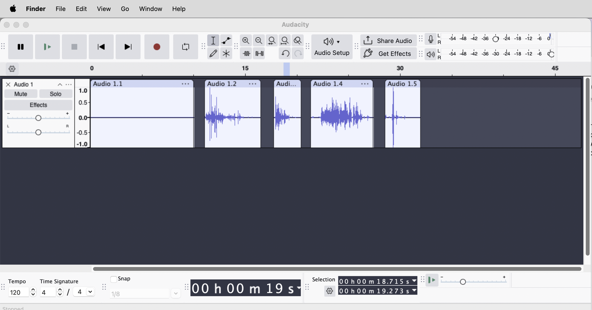
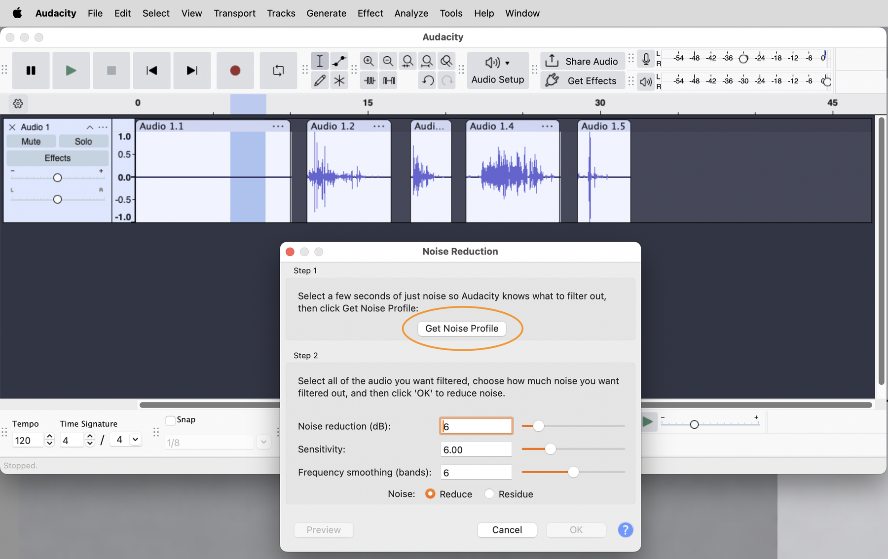
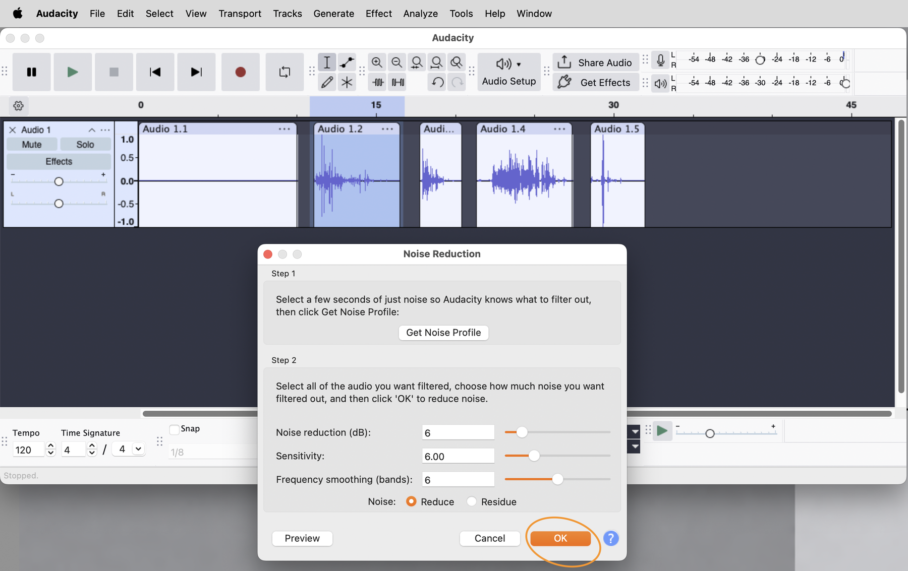

Monday's reading walked you through the basic recording chain on paper. Today you plug it in. By the end of this session you'll have set up Audacity for recording, dialed in a clean level on the interface, captured four short recordings (paper crumble at two speeds, paper rip at two speeds), prepped each one into a usable sample, and organized the lot into a folder structure that's the start of a sample library you'll grow for the rest of the semester. The work today is the foundation for every recording session that follows.
Take from the lab's gear storage: audio interface, headphones, dynamic mic (with stand and XLR cable). Plug in and run through the start-of-session steps on the laminated Session Routines card before continuing here.
The four-stage chain you read about Monday (mic → XLR → interface → computer) is now physically in front of you. If anything looks wrong, or a cable won't plug in cleanly, raise your hand before forcing anything.
Build the folder now, before you open Audacity. This is the home for every sample you record this semester; you'll be living in it for the rest of the course, so take a minute to get the structure right.
~/Documents/lastname/. (If you don't have a folder there yet, make one with your lowercase last name.)sample-library/, create a folder named paper. This is the first category folder; you'll add more categories (metal, water, voice, etc.) as you record more sounds in later weeks.sample-library/, also create a folder named audacity-projects. This is where your working Audacity project file will live (you'll save it there in a few minutes). Keeping it separate from the prepped samples means you can browse paper/ as a flat list of finished sounds without your .aup3 file cluttering the view.Your folder should now look like this:
~/Documents/lastname/
sample-library/
paper/ <-- empty for now; samples land here in Step 9
audacity-projects/ <-- empty for now; the .aup3 project lands here after the test recording
Open Audacity. Before recording, you need to check the audio settings.
The Audio Settings panel in Preferences also has Recording Device, Playback Device, and Recording Channels dropdowns. You can change them here. The next section shows you the same change from the main window's Audio Setup button, which is what you'll use day to day; the Preferences panel is just where everything lives if you ever need to dig in.
A dynamic mic plugged into one input on the interface is a mono source: one signal, one stream of numbers, one channel. Recording it to a mono track stores it correctly (one channel of audio) and produces a file that's half the size of an unnecessary stereo version. Stereo is for setups with two mics or a stereo source; today is one mic.
The gain knob on the audio interface controls how much the preamp amplifies the mic-level signal before the ADC converts it to digital. You met it in Monday's reading. Today you set it. The target you're aiming for: when you make the loudest version of the sound you're about to record, the peaks on Audacity's input meter land in the -12 to -6 dBFS band. That's the window; anything outside it means you need to adjust.
Three bands matter:
To dial it in:
Audacity's default is to keep the input meter dark unless the project is actively recording. To set the gain you need to see live levels before you press record, which is what Enable Silent Monitoring does. Once it's on, the menu item flips to Disable Silent Monitoring (so you can turn it back off if you ever need to). For setting gain, leave it on.
You might be tempted to undershoot the gain ("better safe than clipping") and plan to fix it in editing. Don't. A signal recorded too quietly carries less information than one recorded at the right level, and when you amplify it after the fact you amplify the room noise along with the sound. Set the gain right at the source. Normalize, in the prep step later, is for standardizing across already-good recordings, not for rescuing too-quiet ones.
You need to hear yourself through the headphones while you're recording. The interface's monitor blend control decides what you hear: the live signal coming straight from the mic (no latency), the signal coming back from the computer (a few milliseconds late), or a mix of both.
Today you want to hear the mic directly, with little or no playback from the computer.
Speak into the mic. You should hear yourself in the headphones with no perceptible delay. If you hear a noticeable echo or stutter, the monitor blend is set toward Playback rather than Inputs; adjust it.
Before you commit to the four real recordings, do one practice take to confirm the chain is working end to end.
Three things to check as you listen:
When the test sounds clean, delete the test clip. Click the X in the track header (or select the track and press Cmd + Shift + K to remove the track) and add a fresh mono track. You want the project to start clean.
Now is the right moment to save the Audacity project, before you start capturing real recordings. , navigate to ~/Documents/lastname/sample-library/audacity-projects/ (the folder you built in Step 1), name the project sample-library.aup3, click Save. From this point on, save every few minutes with Cmd + S.
Every room has a noise floor: the small constant level of background sound from the ventilation, the computers, the building. You can't hear it most of the time because your ears tune it out, but a microphone catches it, and a quiet recording will pick it up alongside the sound you actually want. Audacity has a Noise Reduction effect that can subtract it back out, but to use it the effect needs to see a clean sample of just the noise, with no other sound mixed in. That sample is called a noise profile, and you're going to record it now.
You now have a 10-second clip of pure room tone on your track. This is your noise-profile clip. The waveform looks almost flat: just the small wiggles of the room noise itself, with no other content. Leave it where it is; you'll use it during the prep step.
You could capture the noise profile at the start of every recording. Recording it once as its own clip is cleaner: you have one definitive sample of room tone, you set the noise profile from it once, then apply Noise Reduction to each of the four sound clips. Less to remember during recording, less to trim during prep.
Pick up a sheet of paper from the stack at your station. You're going to record four short sounds, each as its own clip on the same mono track.
The four recordings, in order:
For each recording:
The one-second buffer at each end gives you room to trim cleanly in the prep step. If you cut the silence too tight at the recording stage, you risk clipping off the very beginning or end of the sound itself.
Between recordings, listen back. Click on the clip you just made, press Space, hear it. If a recording didn't capture what you wanted, click the clip's X to delete it, and try that one again. Don't move on until each recording sounds like what you intended.

You have five clips on one track: a noise-profile clip first, then the four paper sounds. The prep pipeline turns each of the four sound clips into a sample: a clean, standardized file ready to live in the library and be used in later projects. The pipeline has three steps, applied in order: denoise → trim → normalize.
You'll go through it four times, once per sound. The noise-profile clip itself doesn't get prepped; it's a tool, not a sample.
Before the first denoise, Audacity needs to learn what the room noise sounds like. You only do this once; the noise profile stays in memory until you change it or close the program.

Now apply the three pipeline steps to each paper-sound clip in turn. Start with paper crumble, slow (the second clip on the track).
1. Denoise.

2. Trim.
A hard trim almost always cuts the waveform mid-cycle, which produces an audible click at the start or end of the file. Smooth it out with a short fade at each end of the clip:
The Fade In / Fade Out commands and the Cmd + E ↔ Cmd + F zoom pair are all from Module 2; you've used them before.
3. Normalize.
Normalize is a single multiplication applied to every sample. It doesn't change the shape of the sound; it changes its size. A quiet sample stays quiet relative to a loud sample within the same clip. What changes is where the loudest peak sits. Every sample in your library will end up normalized to the same -1 dBFS ceiling, which means you can combine them later without one dominating the mix.
That's one full pipeline run. The clip is now denoised, trimmed (with fades at both ends), and normalized. Repeat for the other three sounds (paper crumble fast, paper rip slow, paper rip fast). Listen to each after you finish to confirm it sounds right.
Now you have four prepped clips. Time to export each one as a standalone WAV file into the paper/ folder of your library.
Audacity exports the whole project by default, which would give you one big file with all four sounds in it. You want four separate files, one per sound. The pattern: select a clip first, then export, with the export range set to the current selection.
For each of the four samples:
~/Documents/lastname/sample-library/paper/WAV (Microsoft)44100 HzSigned 16-bit PCMThe naming convention for samples this semester:
[category]-[descriptor]-[variant].wavLowercase, hyphens between words, no spaces, no special characters. For today's four sounds:
The category is paper: this matches the folder name, which makes the path itself readable (paper/paper-crumble-slow.wav). The descriptor names what the sound is (a crumble, a rip). The variant distinguishes two takes of the same descriptor (slow vs fast).
After all four exports, open the paper/ folder in Finder. You should see exactly these four files:
~/Documents/lastname/sample-library/paper/
paper-crumble-fast.wav
paper-crumble-slow.wav
paper-rip-fast.wav
paper-rip-slow.wavSave the Audacity project one more time (Cmd + S) so the prepped state is preserved alongside the exported WAVs.
A library without a README is a pile of files. A README is the document at the root of the library that explains what's in it, how it's organized, and how to find things. You write the first version today and update it every time you add to the library.
README.txt in ~/Documents/lastname/sample-library/.SAMPLE LIBRARY · [your name]
MUS 381 · Fall 2026
Started: Wed Wk 6, [date]
Last updated: [today's date]
ORGANIZATION
Samples are organized in category folders at the root of the library:
paper/ Paper sounds (crumbles, rips)
Filename convention:
[category]-[descriptor]-[variant].wav
e.g. paper-crumble-slow.wav
All samples are mono, 44.1 kHz, 16-bit WAV.
All samples are prepped: denoised, trimmed, normalized to -1 dBFS.
CONTENTS
paper/ (4 samples)
paper-crumble-slow.wav Slow crumble of a sheet of paper, ~8 sec
paper-crumble-fast.wav Fast crumble, ~2 sec burst
paper-rip-slow.wav Slow tearing, ~7 sec
paper-rip-fast.wav Fast tearing, one motion
NOTES
[anything you want to remember about today's session, e.g.
"the slow crumble took two tries; the first one was too fast"
or "interesting how different the two rip speeds feel"]
The library will grow to dozens of sounds by the end of the semester. By the time you're picking samples for the final project in Module 4, you won't remember what every recording sounds like just from its filename. The README is the document you write to your future self so future-you can find what current-you recorded.
The laminated card has the full end-of-session routine. The steps below are the lab-specific part (what to upload) that fold into the card's NAS-upload phase.
students/lastname/.sample-library/ folder from ~/Documents/lastname/ to students/lastname/ on the NAS. Wait for the copy to finish.students/lastname/sample-library/paper/ on the NAS and confirming all four WAVs are there.Then continue with the rest of the card's end-of-session routine: close Audacity and TextEdit, eject the NAS, sign out of browser accounts, quit any remaining apps, knobs back to zero, unplug everything (including the mic's XLR), stow the gear back in the lab's gear storage, chair in.
Your library now lives in two places: your local folder for today, and the NAS as the master copy. Next session you'll pull it back down to whichever lab machine you sit at, and continue.
Between now and the next lab, you can grow your library by recording sounds on your phone whenever something catches your ear. The phone-recording reference card walks through the basics: which app to use, mic distance, getting the file off the device. Next lab we'll cover how to import a phone recording into Audacity and run it through the same prep pipeline you used today.
The card is at the front of the room. Pick one up before you leave: Recording on your phone (reference card).
| Action | Where |
|---|---|
| Audio interface settings | Audio Setup dropdown (top toolbar) |
| Add mono track | |
| Live monitor meter | Click the recording level meter (top right), then Enable Silent Monitoring |
| Record / Stop | R / Space |
| Skip to start | Cmd + Home |
| Select a clip | Double-click inside the clip |
| Select a region within a clip | Click-and-drag with the I-beam |
| Zoom in / out | Cmd + 1 / Cmd + 3 |
| Zoom to selection / fit whole project | Cmd + E / Cmd + F |
| Noise Reduction | |
| Trim Audio | · Cmd + T |
| Normalize | |
| Fade In / Fade Out | |
| Export selected audio | · Export Range: Current selection |
| Save project | Cmd + S |